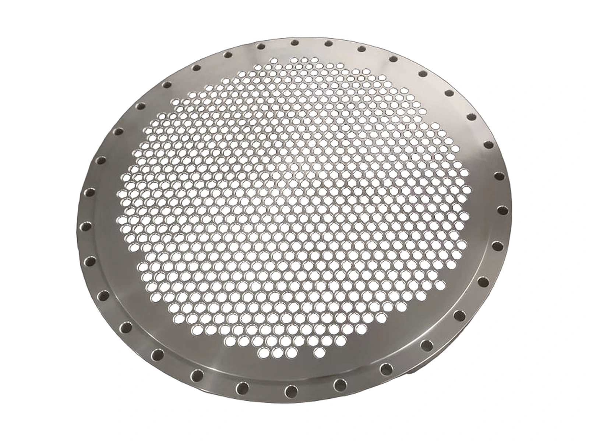

DrawingMade to drawing
Parts outside the standard table.
Custom parts are reviewed for material, dimensions, drilling, machining, marking and inspection before quotation and production.
PartsTubesheets · blind and spacer plates · hubs · rings
Special partsBranch saddles · non-standard fittings and one-off items
MaterialsCarbon steel · stainless steel · alloy steel
BasisCustomer drawing and approved specification
DocumentsEN 10204 3.1 with the order